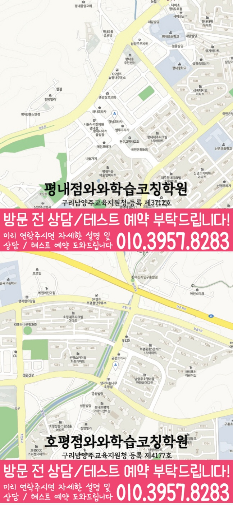

처음부터 많은 문제를 푸는 방식이 아니라, 개념 이해도·오답 원인·풀이 속도를 먼저 확인해 학습 순서를 잡습니다.
지역별 수강 안내
평내동 중3 수학학원
방문할 지점과 수강 조건
평내점 수강 정보
- 연결 지점
- 평내점와와학습코칭학원
- 수학 수강 학년
- 초3~초6 / 중1~중3 / 고1~고2
- 방문 주소
- 경기 남양주시 경춘로 1256번길 9 501호
제공된 지점 자료에서 평내점의 중3 수학 수강 학년을 확인했습니다. 현재 모집과 시간표는 상담에서 확인해 주세요.


학습커리큘럼
배우는 내용과 공부의 시작점을 함께 살펴보세요
학교 진도와 현재 이해도에 맞춰 학습 범위·순서·확인 과제를 찾아보세요.
학생·학부모 교육정보
과목별 공부 방법도 함께 살펴보세요
시험 준비, 과목별 공부와 학습 습관을 구체적인 예시로 확인하세요.
선생님 소개
평내점 선생님을 만나보세요
선생님의 인사와 학습 지도 방향을 살펴보고, 상담에서 궁금한 내용을 준비해 보세요.
경기 남양주시 평내동에서 중3 수학학원을 찾는 학생을 위해, 내신 성적을 바꾸는 학습 흐름을 안내합니다. 와와학습코칭센터는 현재 실력 진단을 바탕으로 개념을 탄탄히 정리하고, 유형별 문제풀이와 오답 관리까지 이어지도록 수업과 코칭을 함께 진행합니다. 단원별 약점과 풀이 습관을 점검해 시험 직전까지 성장을 만들겠습니다.
평내동 중3 수학 수업의 핵심 포인트
학교 시험 경향에 맞춰 개념 문제→기본 유형→킬러·서술형까지 단계적으로 연습하며 실전 감각을 키웁니다.
선생님 특징
계산 실수, 부호/조건 누락, 문제 해석 실수 등 원인을 분리해 같은 실수가 반복되지 않도록 지도합니다.
틀린 문제를 다시 푸는 데서 끝내지 않고, 왜 틀렸는지와 다음에 어떻게 풀지까지 정리해 완성도를 높입니다.
수업 진행방식
1. 현재 수준 확인
최근 시험 흐름과 학교 진도에 맞춰 단원별 취약 개념, 자주 틀리는 유형, 풀이 속도 문제를 점검합니다.
2. 개념 정리와 내신 유형 학습
바로 문제풀이로 넘어가기보다 핵심 개념을 정리한 뒤, 시험에 잘 나오는 유형부터 서술/응용까지 단계적으로 학습합니다.
3. 오답 관리와 학습 피드백
오답 노트를 ‘정답을 찾는 기록’이 아니라 ‘다음에 바로 적용하는 기준’으로 만들고, 주간 단위 피드백으로 보완합니다.
학년별 학습 전략
중1·중2 (기초 다지기)
- 공식 적용과 기본 계산력을 안정화하고, 단원별 핵심 개념을 빠르게 연결합니다.
- 풀이 습관(조건 정리, 식 세우기, 검산)을 교정해 중3 내신 대비 기반을 만듭니다.
중3 (내신 성적 상승)
- 학교 시험 범위와 출제 스타일에 맞춰 단원별 문제 난도·유형을 조절합니다.
- 오답 원인(계산/해석/개념 부족)을 분류해 약점을 우선 보완하고, 서술형·실전형을 강화합니다.
영어·국어 연계 관리
- 수학이 어려운 학생도 지문 해석이 흔들리는 경우가 있어, 학습 태도와 문제 이해력도 점검합니다.
- 필요 시 시간 관리와 학습 루틴을 함께 설계해 과목 전반 성과가 나도록 코칭합니다.
시험 대비 (단기 집중)
- 시험 전에는 실수 유형과 자주 틀리는 유형을 우선 순위로 재점검합니다.
- 단원별 복습 체크리스트와 오답 재정리를 통해 시험 당일 점수를 끌어올립니다.
평내동 와와학습코칭센터는 경기 남양주시 중3 학생의 현재 상태를 기준으로 필요한 수학 학습을 정리하고, 상담을 통해 내신·유형·오답 방향까지 구체적으로 안내드립니다.
센터 위치 안내
주소
경기 남양주시 경춘로 1256번길 9 501호
오시는 길
평내 상가 지역에서 1층에 메가커피가 있는 건물 2층입니다. 2층에 아지트떡볶이가 있습니다.
상담에 참고할 학교 목록
학교별 내신 수업과 수강 가능 여부는 센터에 확인해 주세요.
초등학교
남양주백봉초등학교
남양주신촌초등학교
장내초등학교
평내초등학교
호평초등학교
중학교
장내중학교
평내중학교
호평중학교
고등학교
금곡고등학교
판곡고등학교
평내고등학교
호평고등학교
과목별 수강 가능 학년
국어
수강 가능 학년은 센터에 문의해 주세요.
영어
초3
초4
초5
초6
중1
중2
중3
고1
고2
수학
초3
초4
초5
초6
중1
중2
중3
고1
고2
과학
수강 가능 학년은 센터에 문의해 주세요.
사회
수강 가능 학년은 센터에 문의해 주세요.
학원 등록 정보
교육비 참고와 확인할 조건
지역 공통 참고 금액입니다. 이 지점의 확정 교습비는 안내 자료와 상담에서 확인해 주세요.
기존 공통 안내: 서울 외 (1회 90~100분, 단위: 원)
| 횟수 | 초등 | 중등 | 고등 |
|---|---|---|---|
| 주 3회 | 219,000 | 236,000 | 269,000 |
| 주 4회 | 279,000 | 301,000 | 344,000 |
| 주 5회 | 339,000 | 366,000 | 419,000 |
위 표는 기존 공통 안내 금액으로, 현재 센터별 교습비와 다를 수 있습니다. 실제 과목·수업 시간·추가 프로그램과 최종 금액은 교습비 안내 자료 및 센터 상담을 통해 확인해 주세요.
중3 수학 상담부터 오답관리까지 이어지는 흐름
중3 수학은 현재 내신 성적만 보는 단계가 아니라, 고등 수학으로 넘어가기 전 개념 연결과 풀이 습관을 정리해야 하는 시기입니다. 상담에서는 학교 진도, 시험 범위, 자주 틀리는 유형, 풀이 기록을 함께 확인해 학생에게 맞는 학습 순서를 잡습니다.
현재 수준 확인
학교 진도, 최근 시험 결과, 어려운 단원, 숙제 수행률과 실수 유형을 확인합니다.
개념과 유형 진단
중3 핵심 단원의 개념 이해, 조건 해석, 식 세우기, 도형 추론 과정을 나누어 봅니다.
플래너 실행 점검
단원별 복습, 유형 반복, 시험 범위 마감 계획을 세우고 실제 수행 여부를 확인합니다.
오답 원인 분석
틀린 문제를 개념 부족, 조건 누락, 계산 실수, 풀이 전략 부족으로 분류해 다음 학습으로 연결합니다.
CONSULTING CHECKLIST
평내동 중3 수학학원 상담 전 체크리스트
실제 상담 전 아래 항목을 확인하면 학생에게 필요한 영어·수학 학습 방향을 더 빠르게 정리할 수 있습니다.
- 현재 교재사용 중인 교재와 진도를 확인합니다.
- 최근 시험지점수보다 반복되는 오답 유형을 확인합니다.
- 공부 시간평소 공부 시간과 숙제 수행 정도를 봅니다.
- 상담 목표성적, 습관, 오답, 시험 대비 중 우선순위를 정합니다.
STUDY GUIDE
평내동 중3 수학 학원 학습관리 포인트
평내동 중3 수학 학원을 찾는 학생이라면 중3 과정에서 필요한 수학 학습 목표를 먼저 정리하는 것이 좋습니다. 현재 학교 진도와 최근 시험 결과, 숙제 수행 습관을 함께 보면 상담 방향이 훨씬 구체적입니다.
공식 암기보다 단원 핵심 개념을 말로 설명할 수 있는지 확인하고, 설명이 막히는 부분부터 다시 정리합니다.
학교 시험에 자주 나오는 기본·응용 유형을 구분하고, 풀이 순서를 스스로 재현할 수 있게 반복합니다.
계산 실수, 조건 해석 오류, 개념 부족, 시간 부족을 나누어 기록하면 다음 복습 계획이 더 정확해집니다.
경기 남양주시 평내동 상담 전 체크
최근 시험지, 학교 진도, 어려운 단원, 숙제 수행 정도를 함께 정리해두면 상담에서 학생에게 필요한 학습 순서를 더 빠르게 잡을 수 있습니다.
함께 보면 좋은 학습가이드
현재 페이지의 학년·과목과 연결되는 정보성 콘텐츠입니다. 지역 페이지와 함께 읽으면 상담 준비와 학습 계획을 더 구체화할 수 있습니다.
평내동 관련 학원 페이지
현재 보고 있는 지역 안에서 센터 안내와 학년·과목별 상세 페이지로 바로 이동할 수 있습니다.
평내동 중3 수학학원 상담이 필요하신가요?
중3 수학의 현재 개념 이해도, 내신 대비 계획, 고등 수학 준비, 오답 패턴을 상담문의로 남겨주시면 학습 방향을 구체적으로 확인할 수 있습니다.
상담문의LOCAL DETAIL LINKS
평내동 관련 학습 페이지 바로가기
같은 동네 안에서 함께 보면 좋은 학년·과목별 학습 안내 페이지를 정리했습니다.
동네 학원
평내동학원 영어수학 전문학원
같은 동네의 기본 영어수학 학원 안내로 이동합니다.
연관 과정 평내동 고1 수학학원같은 동네의 다른 학년·과목 안내도 함께 확인할 수 있습니다.
연관 과정 평내동 고1 영어학원같은 동네의 다른 학년·과목 안내도 함께 확인할 수 있습니다.
연관 과정 평내동 고2 수학학원같은 동네의 다른 학년·과목 안내도 함께 확인할 수 있습니다.
연관 과정 평내동 고2 영어학원같은 동네의 다른 학년·과목 안내도 함께 확인할 수 있습니다.
연관 과정 평내동 중2 수학학원같은 동네의 다른 학년·과목 안내도 함께 확인할 수 있습니다.
연관 과정 평내동 중2 영어학원같은 동네의 다른 학년·과목 안내도 함께 확인할 수 있습니다.
연관 과정 평내동 중3 영어학원같은 동네의 다른 학년·과목 안내도 함께 확인할 수 있습니다.
수강 전에 자주 묻는 질문
평내동에 있는 별도 지점인가요?
이 동네 안내에서 연결되는 곳은 평내점와와학습코칭학원입니다. 실제 방문 주소는 경기 남양주시 경춘로 1256번길 9 501호입니다.
중3 수학을 수강할 수 있나요?
제공된 지점 자료에서 평내점의 중3 수학 수강 학년을 확인했습니다. 현재 모집과 시간표는 상담에서 확인해 주세요.
교육비 표의 금액으로 바로 등록할 수 있나요?
지역 공통 참고표는 개별 지점의 확정 교습비가 아닙니다. 교습비 안내 자료에서 과목당 금액과 수업 시간·횟수·교재비를 확인하고 최종 비용을 상담에서 확인하세요.
안내 자료 대조: . 현재 모집·시간표·최종 비용은 지점에서 확인해 주세요.